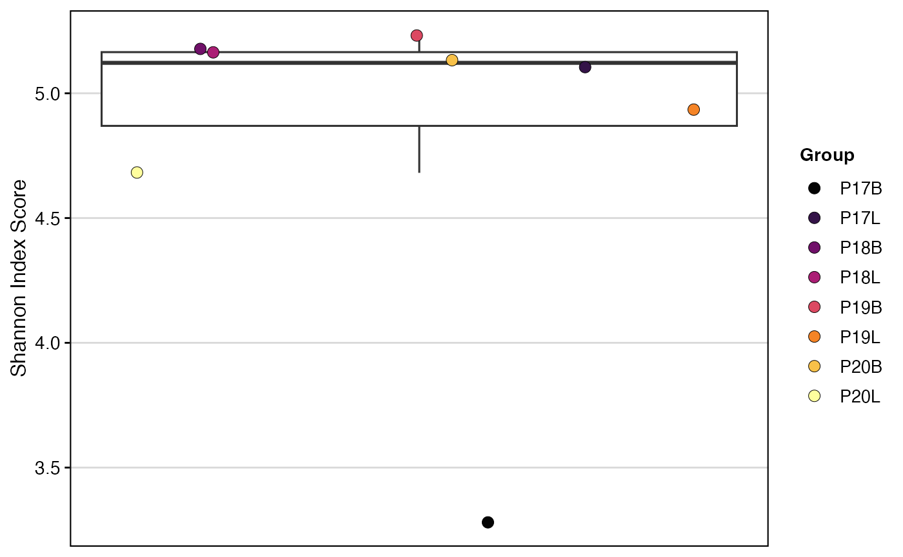
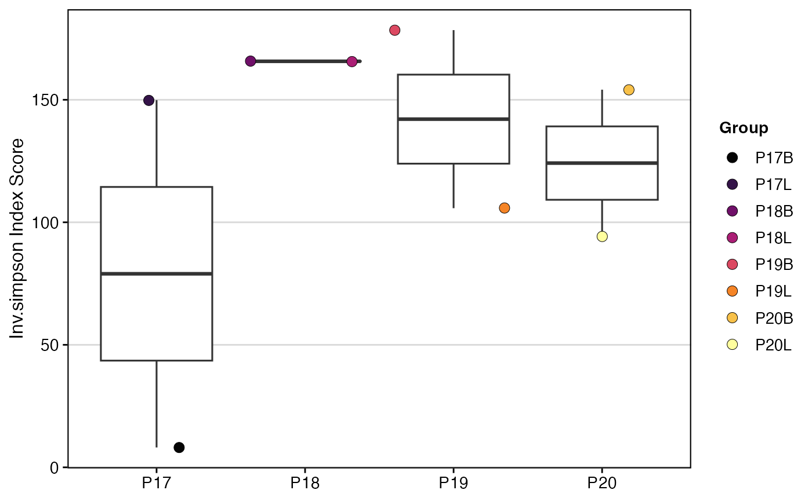
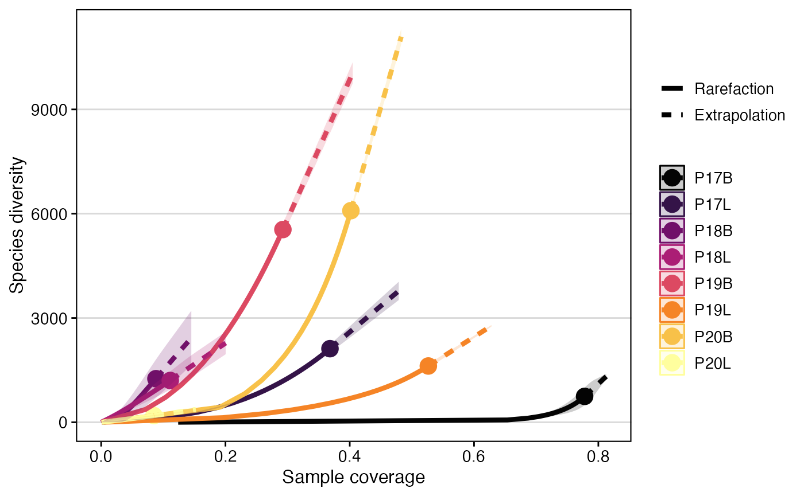
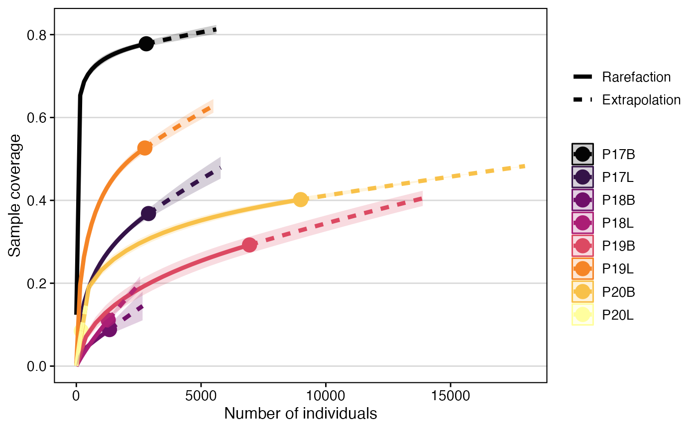
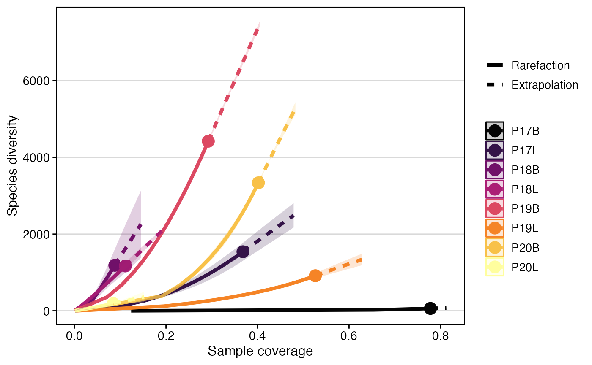

Comparing Clonal Diversity and Overlap
Compiled: October 31, 2025
Source:vignettes/articles/Clonal_Diversity.Rmd
Clonal_Diversity.RmdclonalDiversity: Clonal Diversity Quantification
Diversity can be measured for samples or by other variables.
clonalDiversity() calculates a specified diversity metric
for groups within a dataset. To control for variations in library size,
the function can perform bootstrapping with downsampling. It resamples
each group to the size of the smallest group and calculates the
diversity metric across multiple iterations, returning the mean
values.
How clonalDiversity() Handles Downsampling and
Bootstrapping
- It determines the number of clones in the smallest group.
- For each group, it performs
n.bootsiterations (default = 100). - In each iteration, it randomly samples the clones (with replacement) down to the size of the smallest group.
- It calculates the selected diversity metric on this downsampled set.
- The final reported diversity value is the mean of the results from all bootstrap iterations.
- This process can be disabled by setting
skip.boots = TRUE.
Available Diversity Metrics (metric)
| Metric | What it measures | Typical scale | Higher value indicates… |
|---|---|---|---|
shannon |
Joint richness + evenness of clonotypes; moderately sensitive to rare clones (entropy of the frequency distribution). | 0 → ∞ | More distinct clonotypes and a more even clone-size distribution. |
inv.simpson |
Evenness-weighted diversity (inverse Simpson’s D); heavily penalises dominance by a few large clones. | 1 → ∞ | Few highly dominant clones; diversity spread across many mid-abundance clones. |
norm.entropy |
Shannon entropy divided by ln S (where S = no. clonotypes); removes library-size dependence. | 0 → 1 | Same interpretation as shannon, but
comparable across samples of different depths. |
gini.simpson |
1 – Simpson’s D; probability that two reads drawn at random come from different clonotypes. | 0 → 1 | Greater heterogeneity (higher chance the two reads represent distinct clones). |
chao1 |
Estimated richness only (number of clonotypes), correcting for unseen singletons/doubletons. | 0 → ∞ | More unique clonotypes, regardless of their relative abundances. |
ACE |
Abundance-based Coverage Estimator—alternative richness estimator robust when many clones are rare. | 0 → ∞ | More unique clonotypes, especially when the repertoire contains many low-frequency clones. |
gini |
Inequality of clone size distribution (Gini Coefficient); measures how unevenly clone sizes are distributed. | 0 → 1 | Greater inequality; a few highly abundant clones dominate the repertoire. |
d50 |
Repertoire dominance; how many of the top clones are needed to constitute 50% of the total library. | 1 → ∞ | Less dominance by top clones; the repertoire is more evenly distributed. |
hill0 |
Richness (Hill number q=0); the total number of unique clonotypes observed in the sample. | 0 → ∞ | More unique clonotypes (greater raw richness). |
hill1 |
Effective number of abundant clonotypes (Hill number q=1); the exponential of Shannon entropy. | 1 → ∞ | Higher diversity of common clonotypes, balancing richness and evenness. |
hill2 |
Effective number of dominant clonotypes (Hill number q=2); equivalent to the inverse Simpson index. | 1 → ∞ | Higher diversity among the most dominant clonotypes in the repertoire. |
Key Parameters for clonalDiversity()
-
metric: The diversity metric to calculate. -
x.axis: An additional metadata variable to group samples along the x-axis. -
return.boots: IfTRUE, returns all bootstrap values instead of the mean. -
skip.boots: IfTRUE, disables downsampling and bootstrapping. -
n.boots: The number of bootstrap iterations to perform (default is 100).
To calculate Shannon diversity, grouped by sample:
clonalDiversity(combined.TCR,
cloneCall = "gene")
There are two options for grouping in clonalDiversity():
group.by and x.axis.
-
group.by: Reorganizes the clone information into new groups that the calculation will be based on. -
x.axis: Keeps the organization of the clone information the same, but plots along the x-axis for improved visibility or grouping.
First, add a “Patient” variable to combined.TCR
combined.TCR <- addVariable(combined.TCR,
variable.name = "Patient",
variables = c("P17", "P17", "P18", "P18",
"P19","P19", "P20", "P20"))Now, calculate Inverse Simpson diversity, grouped by “Patient”:
clonalDiversity(combined.TCR,
cloneCall = "gene",
group.by = "Patient",
metric = "inv.simpson")
Calculate Inverse Simpson diversity with “Patient” on the x-axis, keeping the original grouping:
clonalDiversity(combined.TCR,
cloneCall = "gene",
x.axis = "Patient",
metric = "inv.simpson")
clonalDiversity() functions in quantifying and comparing
the diversity of immune repertoires across different samples or
experimental conditions. By implementing bootstrapping and offering a
wide range of diversity metrics, it provides robust and comparable
measures of clonal richness and evenness, which are fundamental for
understanding immune responses and disease states
clonalRarefaction: Sampling-based Extrapolation
clonalRarefaction() uses Hill numbers to estimate
rarefaction, or estimating species richness, based on the abundance of
clones across groupings. The underlying rarefaction calculation uses the
observed receptor abundance to compute diversity. This function relies
on the iNEXT R package.
plot.type Options
-
1: Sample-size-based rarefaction/extrapolation curve -
2: Sample completeness curve -
3: Coverage-based rarefaction/extrapolation curve
Key Parameter(s) for clonalRarefaction()
-
plot.type: The type of plot to generate. -
hill.numbers: The Hill numbers to be plotted (0, 1, or 2). -
n.boots: The number of bootstrap replicates used to derive confidence intervals (default is 20).
This function relies on the iNEXT with the accompanying manuscript. Like the other wrapping functions in scRepertoire, please cite the original work. The sample completeness curve (plot.type = 2), may not show full sample coverage due to the size/diversity of the input data.
Rarefaction using Species Richness (q = 0)
clonalRarefaction(combined.TCR,
plot.type = 1,
hill.numbers = 0,
n.boots = 2)
clonalRarefaction(combined.TCR,
plot.type = 2,
hill.numbers = 0,
n.boots = 2)
clonalRarefaction(combined.TCR,
plot.type = 3,
hill.numbers = 0,
n.boots = 2)
Rarefaction using Shannon Diversity (q = 1)
clonalRarefaction(combined.TCR,
plot.type = 1,
hill.numbers = 1,
n.boots = 2)
clonalRarefaction(combined.TCR,
plot.type = 2,
hill.numbers = 1,
n.boots = 2)
clonalRarefaction(combined.TCR,
plot.type = 3,
hill.numbers = 1,
n.boots = 2)
clonalRarefaction() provides robust estimates of immune
repertoire diversity, allowing for comparison of richness and effective
diversity across samples, even with varying sequencing depths. By
visualizing rarefaction and extrapolation curves, researchers can assess
the completeness of their sampling and make fair comparisons of
diversity, which is essential for understanding immune complexity.
clonalSizeDistribution: Advanced Modeling Of Clonal Composition
Another method for modeling the repertoire distribution is a discrete gamma-GPD spliced threshold model, proposed by Koch et al. The spliced model models the repertoire and allows for the application of a power law distribution for larger clonal-expanded sequences and a Poisson distribution for smaller clones. After fitting the models, repertoires can be compared using Euclidean distance. If using this function, please read/cite Koch et al. and check out the powerTCR R package.
Key Parameter(s) for clonalSizeDistribution()
-
method: The agglomeration method for hierarchical clustering (e.g., “ward.D2”).
To model the clonal size distribution using amino acid clone calls and hierarchical clustering with the “ward.D2” method:
clonalSizeDistribution(combined.TCR,
cloneCall = "aa",
method= "ward.D2")
clonalSizeDistribution() offers a sophisticated approach
to modeling immune repertoire composition, distinguishing between the
distribution of rare and expanded clones. By applying a spliced
statistical model, it provides a more accurate representation of the
repertoire’s underlying clonal architecture, enabling robust comparisons
and a deeper understanding of immune system dynamics.
clonalOverlap: Exploring Sequence Overlap
If you are interested in measures of similarity between the samples
loaded into scRepertoire, using clonalOverlap() can assist
in the visualization. The underlying clonalOverlap()
calculation varies by the method parameter.
method Parameters for clonalOverlap()
-
overlap- Overlap coefficient -
morisita- Morisita’s overlap index -
jaccard- Jaccard index -
cosine- Cosine similarity -
raw- Exact number of overlapping clones
To calculate and visualize the Morisita overlap index using strict clone calls:
clonalOverlap(combined.TCR,
cloneCall = "strict",
method = "morisita")To calculate and visualize the raw number of overlapping clones using strict clone calls:
clonalOverlap(combined.TCR,
cloneCall = "strict",
method = "raw")clonalOverlap() is a tool for assessing the similarity
and shared clonotypes between different immune repertoires. By offering
various quantitative methods and a clear heatmap visualization, it
allows researchers to identify the degree of overlap, providing insights
into shared immune responses, cross-reactivity, or the impact of
different treatments on clonal composition.